Dictionary: define linelist tables and their variables
The dictionary is stored in an Excel table divided into several sections, which define the different sheets that will be part of the Excel linelist produced.
Each line corresponds to a variable and includes most the characteristics of that variable.
The dictionary is divided into the following sections:
| Section | Description |
|---|---|
| Variable name and labels | Lists the variables to be collected by defining their main characteristics |
| Sheets and Sections | Allows you to organise variables by sheets, section and sub-section, and define the table orientation |
| Properties | Allows you to assign different properties to variables, in particular defining dropdown menus, formulas or format. |
| Data exports | Selects and order the variables to be exported |
| Data validation | Allows you to define accepted MIN and MAX values, and the corresponding alert or error when an input is outside the defined limits. |
When compiling the setup, make sure that all the columns from this sheet are unhidden.
Variable names and labels
This first part lists all the variables you want to have in the final linelist.
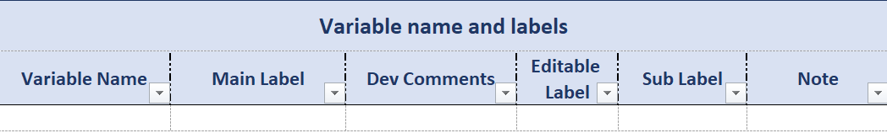
Variable Name

This is a free text field used to identify the variable. This name can be used to refer to this variable in formulas or in the Analyses sheet.
After you generate the linelist file, the variable name info will be found in the formula bar in the grey cells from the eigth row of the linelist sheet, or in the cell name zone for cells of the Info sheet.
Variable names rules:
- Names must be unique in the setup file, even if the variables are on different sheets. If two or more variables were to have the same name, the second occurrence will automatically be suffixed with the value “1”; if there is a third, it will be suffixed with the value “2”, and so on.
- Names must be at least 4 characters long to be valid.
- Names should not contain special characters (except for “_”).
- Names will be automatically converted to lowercase during compilation.
As a general advice, try to create short but explicit names.
To ensure that variable names are unique, you can add the name of the sheet in which the variable will appear as a prefix, or use numbers.
We recommend that you do not leave any blanks in the variable name. Instead, replace them with “_”.
Main Label

This is a free text field that defines the variable label. Labels can be more descriptive and longer than names, but we recommend to keep it moderately short for legibility reasons. The main label appears in black and bold in the linelist file.
It cannot be modified by the end user (with one exception, see the “Editable section” below).
To add more details, you can use the following fields: “Sub Label” and “Note” (see below).
Dev Comment

This free text column is for the sole benefit of the setup file creator (in all probability, you), to add purely technical or practical information. It is not read by the designer and does not affect the generated file.
One of the author of this wiki uses these tags:
Format: calculated columns created solely for applying conditional formatting (see section on “Conditional formatting” below). These columns are very specific, and pure format. Tagging them helps to quickly make sure that they are never exported
MoH: columns created when a general setup is adapted to a specific country, by adding exports to a specific MoH format. Usually, we need to create some calculated columns that match the MoH export (recoding levels, or perhaps merging information of several variables…). I like to keep track of which columns are from the general setup and which are specific adaptations.
WHO/Epinetwork: sometimes I want to keep the information that a column is here because it comes from the Epinetwork or the WHO CRF, and should probably not be modified.
Boilerplate: calculated columns that are needed for graphs, or because the information is important (such as epiweeks). These columns are often hidden, but not necessarily.
Feel free to use this column in a way that helps you work!
Editable Label

This is a yes/no column. If the value is “yes”, the label of the variable in the linelist can be modified by the user. If the value is “no” or if the field remains empty, the variable label in the linelist will be protected.
Sub Label

This is a free text field used to add a brief description under the variable label, such as the format in which a date is expected, a unit, or any other information to help with filling the variable in.
In the linelist, the sub-label appears just below the main label, in blue and slightly smaller font. It cannot be modified by the end user.
The sublabels “Calculated” and “Custom label” are added automatically, no need to add them manually.
Common sublabels include the following:
- Yes / No
- Yes / No / Unk.
- Free text
- The format of your date (ex: DD/MM/YYYY)
Note

This is a free text field which content is added to the linelist as a comment on the corresponding cell. The comment in the linelist can be read by hovering the cursor over the cell. It cannot be modified by the end user.
Example
Definition in the setup file:

Display in the linelistfile:

Sheets and sections

This section of the dictionary organises variables within sheets and tables, and thus creates part of the structure of the linelist.
As a general rule, there is one table per data entry sheet created, but the structure of the table (i.e. the organisation of the variables) can vary.
Sheet Name

This is a free text field that contains the name of the sheet in which the variable will appear.
In general, your linelists will contain at least a data entry sheet, and a metadata/general information data sheet.
More sheets can be created, either automatically (such as the “Instruction” sheet), or by defining analyses in other parts of the setup file.
Sheet Type

This is a drop-down menu field used to define the type of table contained in the sheet. There are 2 options:
vlist1D1: corresponds to a table built vertically, so the variables labels appear in columns, and only one entry is expected for each variable. This type of sheet is used to collect general information about the facilities or data collection.
hlist2D2: corresponds to a horizontally constructed table, so the variables labels appear in a row, and several entries are possible for each variable. This type of sheet is used to collect patient data.

Main Section

This is a free text field used to define the name of the main section in which the variable is located. This makes it possible to organise variables by theme to make data entry and navigation easier.
In the linelist file, the main sections appear in a darker colour in rows or columns, depending on the type of table (dark blue in ?@sec-sheet-sections-example). They cannot be modified by the end user.
To make the dictionary easier to read, we recommend that you group (write one below another) the variables of a same sheet and a same section.
Sub Section

This is a free text field that allows you to further refine the organisation of variables in the table by creating a second level of grouping.
In the linelist file, the sub-sections appear in a lighter colour in the row or column, depending on the type of table (light blue in ?@sec-sheet-sections-example). They cannot be modified by the end user.
Example
vlist1D
Definition in the setup file:

Display in the linelist file:
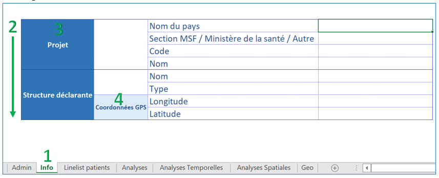
hlist2D
Definition in the setup file:
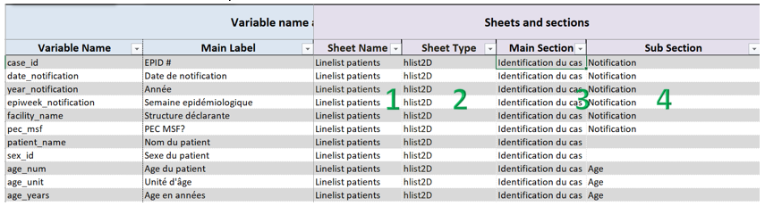
Display in the linelist file:

Properties
The properties section is as follows:

Status
This is a drop-down field that contains four options for defining the visibility of the variable:
“mandatory”: variable displayed by default, it cannot be hidden in the linelist
“optional, visible”: variable displayed by default, it can be displayed or hidden by the linelist user
“optional, hidden”: variable hidden by default, it can be displayed or hidden by the linelist user
“hidden”: variable hidden by default, it cannot be displayed in the linelist
Variables can be shown or hidden using the Show/Hide button in the linelist file.
Example
Definition in the setup file:

Display in the linelist file:

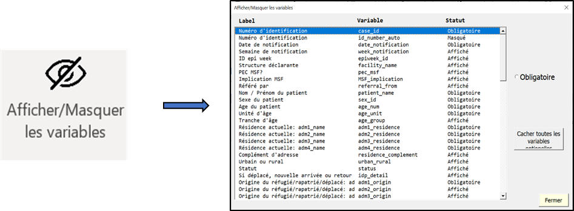
“Mandatory” variables in the setup file appear as “Mandatory” in the “Show/Hide” pop up, and cannot be hidden.
1
The “optional, hidden” variables in the setup file appear as “Hidden” (by default). However, the user can change the status by choosing “Show”, in which case the column will become visible. 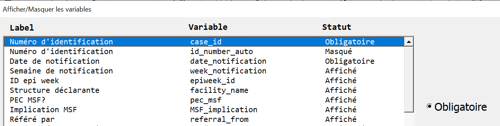
2 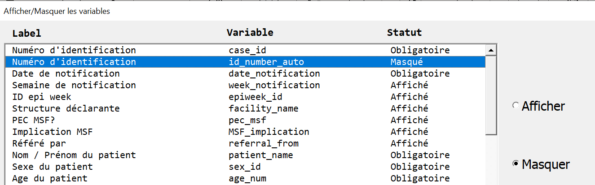
3
The “Notification year” variable does not appear in the list of variables because it is in “hidden” status in the setup file.
The “optional, visible” variables in the setup file appear as “Displayed” (by default). However, you can change the status by choosing “Hide”, in which case the column will no longer be visible.
4 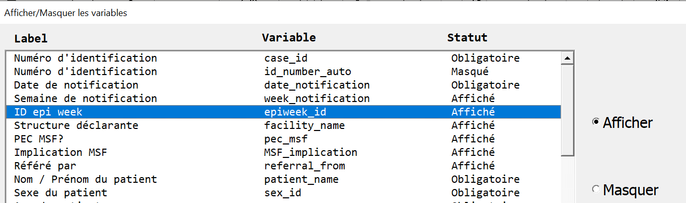
Register Book

This is a yes/no drop-down menu field used to predefine the variables to be included in the register to be printed. This is not mandatory and can be managed later, directly in the linelist file.
Personal Identifier

This is a yes/no drop-down menu field that indicates that the variable contains personal data (such as names, phone numbers etc.).
This column has to uses: - it allows the setup developer to quickly identify variables containing personal data in its dictionary
- it is used to remove variables automatically from the exports if such a behaviour is needed (see the Exports sheet).
Thinking about variables
There are many ways of thinking about variables and of classifying them.
In general we can distinguished between input variables, where the user enters raw data, and calculated (or derived) variables, which require no input. Both of them can be created in OutbreakTools.
Independently of this distinction, a variety of variables types can exist, containing numbers or text in various forms. In Excel, we will often use the types integer, decimals, dates and text.3. See the section on ?@sec-var-type for more information.
For input variables, you could think of two ways of entering data: a “free” approach, where user can enter the value of their choice, and a controlled (constrained) approach, where the values the user can enter are limited. In Excel, this is generally implemented through dropdown menus from which the data encoder selects a value. In OutbreakTools, there have several ways of building dropdown menus, depending on whether you know the categories in advance or not. This is what we call “variable control”. Learn more about it in the ?@sec-var-control.
Finally, many software allow the user to set the way the data is displayed, which we here call format. For example:
- The date first of January of 2023 can be displayed as “01/01/2024”, or “1/1/24” or 1-Jan-24” etc.
- The number “1” could be displayed as “1” simply, or “001”
- The number 0.01 could be displayed with different levels of rounding, or even as “10%” if the column contains proportions that can be displayed as percentages.
Learn more about format in ?@sec-var-format
Variable Type

This column proposes a drop-down menu field containing four options for defining the type [^which is sometimes called class in some softwares] of each variable:
Text: creates a column of text [^also called character string in some softwares]. The entry of the text may be free or constrained by a dropdown menu, see the ?@sec-var-control section below.
Date: creates a date column, whose exact format is defined in the next column, ?@sec-var-format. The default format is jj-mmm-aaaa.
Integer: creates an integer column
Decimal: creates a column with decimal numbers. The number of digits after the decimal point is defined in the following ?@sec-var-format column.
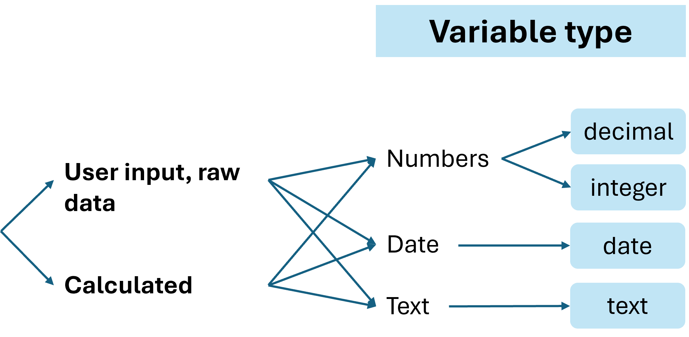
Variable Format

This field is used to specify the format of the variable (which depends on its type).
There is a predefined drop-down list with common options, but you can enter any format by hand, as long as it is written in Excel syntax.
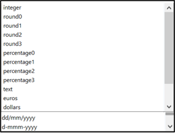
Example: for an integer to appear with at least 2 characters, enter the format: # #00
Note that the default data format is jj-mmm-aaaa.
Control

This is a dropdown field containing nine options for defining variables that are not simple free entry variables:
- choice_manual
- choice_custom
- choice_multiple
- list_auto
- geo
- hf
- formula
- case_when
- choice_formula
These options can be broadly classified in three sorts of variables to be created:
| Sort of variable | Controls | Data entry in the linelist |
|---|---|---|
| Categorical | choice_manual, choice_custom, choice_multiple, list_auto | Dropdown menu |
| Geo-related columns (a special case of categorical) | geo, hf | GeoHelper or dropdown menu |
| Calculated | formula, choice_formula, case_when | No user input needed in these columns |

Special case of amdinistrative levels and health facilities
Two controls allow us to enter geographic information, or information about health facilities. While the created variables will technically contain dropdown menus, they are treated as a special type of variables in OubtbreakTools linelists, with dedicated tools and analyses.
OutbreakTool linelists all have a button to import a geobase, a standardised file containing lists of administrative levels to describe places. Once the geobase successfully imported, the values from its lists will populate specific dropdown menus (see the linelist documentation on how to import a geobase).
Geo
The “geo” control indicates that geographic data is expected. In the linelist, this results in the creation of 4 columns, one for each administrative level, which will be populated by values imported from a geobase. The user can enter data by using the GeoHelper button in the linelist or by selecting values from the cascading dropdown menus in the linelist.
The “geo” control does not need additional information to be filled in the “Control Details” column.
In the linelist, the variable labels appear in an orange cell, which means that the “GeoHelper” button can be used to fill in the corresponding cells.
Example:
Definition in the setup file:

Display in the linelist file:

HF
The “hf” control means that the user will enter en health facility. By identifying hf data in this way, you can use the GeoHelper button in the linelist to fill in the column.
Similarly to the “geo” control, the “hf” control does not need additional information to be filled in the “Control Details” column.
The variable label appears in an orange cell, which means that the GeoHelper button can be used to fill in the corresponding cells.
Example:
Definition in the setup file:
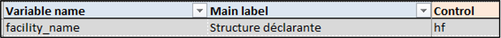
Display in the linelist :

Calculated variables
Three controls allow the creation of calculated columns. In general, the user can define a column by providing an Excel formula [^i.e. a combination of Excel functions], but the setup file also provides two custom functions, CASE_WHEN and CHOICE_FORMULA to simplify formula syntax.
| Control | Functions | Use | Default value | Can be used in analyses tables |
|---|---|---|---|---|
| formula | Any combination of Excel functions (in English) | Anything | Continuous variables: yes Categorical variables: no |
|
| case_when | CASE_WHEN (Excel functions optional) | Replaces nested IF | Empty cell; user can modify it | no |
| choice_formula | CHOICE_FORMULA (Excel functions optional) | Replaces nested IF | Empty character; user cannot modify it | yes |
Formula
When using the “formula” control, the value displayed is calculated according to a formula defined in the Control details column of the dictionary.
Case_when
Variables of control “case_when” use a specifically developed function, CASE_WHEN, which replaces a succession of nested IF. While you could write the formula with nested IF, CASE_WHEN is easier to read, thus simpler to use.
Case usage: you want to recode a variable, but you do not know which values will be generated. For example, the raw data contains a columns for the age value and a column for the age unit. You use CASE_WHEN to create a column “age_years”. The values which will be present in the column can take many decimal value in the range of reasonable ages.
Categorical variable created with this control cannot be used in univariate or bivariate tables in analyses sheets, because we cannot know in advance how many modalities the variable will take, and thus the designer cannot construct the tables.
On the other hand, numeric variables created with this control [^(such as age in years)] can be summarised in the analyses. Indeed, taking the average or the median of a numeric variable variable will always output one value, so the designer knows what to expect.
If the variable is not identified with a “case_when” control, and you still use the function in the “formula” column, Excel will not be able to return the desired result because the function is not native.
If you are using a recent version of Excel, you may know the functions IFS or SWITCH. Outbreak Tools does not rely on them as they are not retro compatible with some older versions of Excel. Use a CASE_WHEN or CHOICE_FORMULA instead.
Read more about writing the formula in the Control details column of the dictionary.
Choice_formula
This control indicates the use of the CHOICE_FORMULA function, another custom function to create a calculated column. This function is a special case of the CASE_WHEN formula with more constrains on it. In this case, the values that the calculated variable can take are known in advance and predefined in the “Choices” sheet.
Columns generated with this control can be used in univariate or bivariate tables, as the number of possible categories is known in advance.
Read more about writing the formula in the Control details column of the dictionary.
Control details
This is a free text field, which accepts three types of values: - the name of a list (defined in the Choices sheet), - the name or a variable (defined in the Dictionary sheet) - a formula.
Control typeStatic dropdown menu |
Control columnchoice_manual, choice_custom, choice_multiple |
Value expected in the “Control details” column | ========================================================================================================================+ The name of a list that contains the authorised values, defined in the Choice sheet (“List Name” column) | | |
| Dynamic dropdown menu | list_auto | The name of an existing variable | |
| Calculated | formula, choice_formula, case_when | An Excel formula (that can contain one or more functions, including the custom functions CASE_WHEN and CHOICE_FORMULA) | |
Formulas
If you have selected “formula”, “choice_formula” or “case_when” in the “Control” column, you need to provide the formula to be applied in this column.
The information given in the Formula control section below are also valid for “choice_formula” and “case_when” controls as these, while based on custom functions, are still formulas.
Formula control
The formula is written in English, without an “=” sign. The formulas are automatically translated into the Excel language defined on the computer used to generate the linelist.
If your Excel is not usually in English, pay special attention to the following:
Use the English function names, such as “MEAN” instead of “MOYENNE”, or “IF” instead of “SI”.
Function arguments are separated by “,” in English. Beware of lingering “;” if you are used to Excel in French!
Similarly, English Excel uses “.” for decimals, not “,” like in French.
In Excel, you can use ALT+ENTRY to insert a carriage return and go to the next line. This does not affect the execution of your formulas, but greatly increases the readability. The same goes for inserting spaces around operators. Contrast these two formulas:

When writing a formula, make sure that it returns an empty value for rows without an ID, as all the rows with non-null values in it will be counted in the Analyses sheets. If your graphs show a lot of “Missing” values that do not reflect how well a column is filled, check that a calculated column is not responsible for it.
Case_when control
Use the CASE_WHEN function to replace nested IF (therefore limiting the risk of error when writing the formula), in this form:
CASE_WHEN( condition1, value1, condition2, value2, condition3, value3, …, …, DEFAULT_VALUE)
You need at least one pair of conditions but the function shines when there are many pairs. As in the nested IF or in the IFS functions, the conditional statement are tested in the order they are written. By default, any case that is not covered by the previous conditions will return an empty cell, unless you provide a default value (the else).
Example
You could write a formula with nested IF to calculate an age_years column:
IF(age_unit = “months”, age_value / 12, IF(age_unit = “days”, age_value / 365, IF(age_unit = “years”, age_value, IF(ISBLANK(age_unit), ““))))
Or write the equivalent with CASE_WHEN:
CASE_WHEN( age_unit = “months”, age_value / 12, age_unit = “days”, age_value / 365, age_unit = “years”, age_value)
The information about the more generalist “formula” control are also valid here.
Choice_formula control
The CHOICE_FORMULA function is a subcase of CASE_WHEN for when we want to encode a few known modalities.
The pseudo-code is very similar to the CASE_WHEN function:
CHOICE_FORMULA(list_values_choices, condition1, value1, condition2, value2, condition3, value3, …, … )
But here, the value1, value2, value3 etc. are pre-defined in the list “list_values_choices” in the “Choices” sheet, as if these values were for a dropdown menu 4.
Since we know exactly which modalities this variable can take, we can use it as a categorical variable in the Analyses sheet, to build a uni or a bivariate table.
Example:
CHOICE_FORMULA(list_age_group, age_years < 5, “0 – 4 years”, age_years < 10, “5 – 9 years, age_years < 15,”10 – 14 years, age_years < 20, “15 – 19 years, AND(age_years >= 20, age_years < 120),”20+ years” )
Here, “list_age_group” corresponds to the list where the potential values to be returned are predefined; “age_years” is an existing variable that contains the age in years. The values between inverted commas (“0 – 5 years”) correspond to the possible results, predefined in “list_age_group”.
The information about the more generalist “formula” control are also valid here.
Unique
This is a yes/no drop-down menu field. It has no direct impact on the linelist, but the information can be used in the data cleaning phase.
Data exports

This section lets you choose the variables you want to have in each export. The rest is defined in the “Exports” sheet (see the ‘Data exports’ page).
You can define the order in which variables are displayed in exports. To do this, simply number them in the desired order.
Variables with any values entered in the Export columns will be exported. If you want to not export a variable, you need to keep the cells empty.
If two variables have the same number in the same export columns, they will be exported in the order they are defined in the setup (from top to bottom).
If you wish to create an anonymous export, i.e. one containing no personal identifier, you can filter the “personal identifier” column to ‘yes’ and check that the column corresponding to the anonymous export is empty.
Data validation

To improve the quality of the data entered, it is possible to alert or block the user if they attempt to enter unvalid data.
For continuous variables, you need to specify the min and or max values (see below), but for dropdown menu variables, go directly to the “Alert” column.
Min
This is a free text field that defines the minimal authorised value in the variable. It can be an integer, a decimal number, the name of a variable or a formula.
As with the formulas, the “=” sign is not placed in front of the limits you define.
Examples: - “0” to not allow negative vallues in an age in month or year column
- “date_notification” to not allo the date of exit to be before the arrival in the health facility
- “today() - 2 * 365” to avoid dates older than two years if you know that the linelist is not used to enter retrospective data
Max
This is a free text field used to define the upper limit of authorised values. It can be an integer, a decimal number, a variable name or a formula.
As with the formulas, the “=” sign is not placed in front of the limits you define.
Examples: - “120” to limit the age in year
- “today()” to not allow dates after the day of data entry in the case of most date columns
Alert
This is a drop-down field. There are two possible options:
- error
- warning
❌ The “error” message blocks data entry: it is impossible to force the entry of a value other than the authorised one. It is symbolised by a cross in a red circle 5.
⚠️ “warning” warns the end user that the data entered is not within the expected values, but if they wish they can still keep this data. It is symbolised by an exclamation mark in an orange triangle.
You can add error and warnings to columns with dropdown menus, the messages will appear if the user tries to enter a value not from the dropdown menu.
Message
This is a free text field used to give the end user an indication of why their entry is invalid.
Examples
A continuous variable: patient’s age
Definition in the setup file:

How it is encoded in the data validation system of the linelist file:

Warning box appearing when the user attempts to enter invalid data:
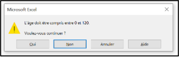
A categorical variable: age unit
Definition in the setup file:

Display in the linelist:
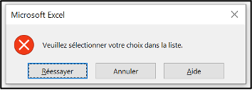
A date variable
Definition in the setup file:

How it is encoded in the data validation system of the linelist file:
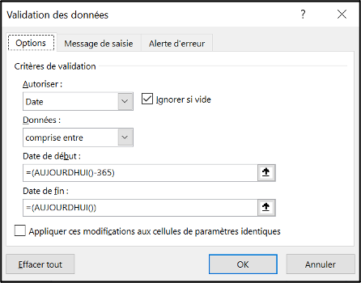
Warning box appearing when the user attempts to enter invalid data:
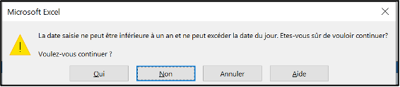
Conditional Formatting
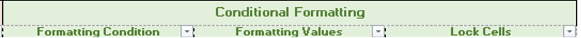
This section is used to define conditional formatting rules.
Formatting condition
The “Formatting Condition” column is a free text column where one must provide the name of a variable to use as a reference. Rows for which the reference column contains 1 will be formatted with the formatting defined in the “Formatting Values” column. Row containing 0 will have no special formatting.
This means that in most cases, you will need to calculate a dummy variable, with a result of 1 or 0, to guide the formatting.
you can give special names to these calculated columns to easily identify them.
Formatting values
This is a free text column, but what matters is not the text entered in it but the formatting applied to it, which is read and applied to the cells in the linelist file, if the formatting condition is met.
Lock cells
The ‘Lock Cells’ section is not currently available.
Example
Definition in the setup file:


Display in the linelist file:

Note that the hospitalised_format columns is completely hidden because it is of no interest to the user, just needed internally to know where to apply formatting.
Footnotes
vlist = vertical list of labels↩︎
hlist = horizontal list↩︎
Note that we used the word “type” in its computer science meaning, which differs a bit from the statisctics one↩︎
you can of course give the list any name that you wish, such as “list_age_group” for example if you were recoding age↩︎
Sometimes the user manage to break through by pasting values though↩︎